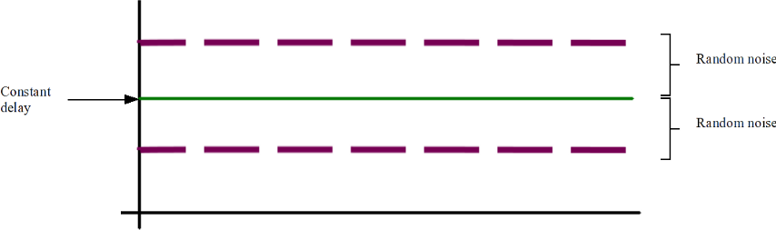
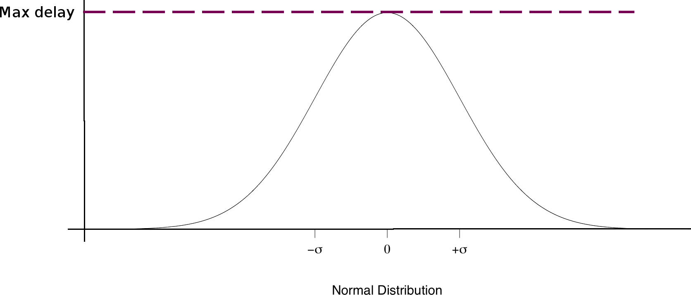
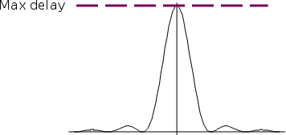

Simulation rule
What is it simulation rule
Simulation rule determines data flow that is sent from source to destination vertex.
Here is a list of parameters to configure:
- name - to make it recognisable by user
- source and destination vertices
- routing - more here
- number of packets
- size of each packet (all packets within the same simulation rule have the same size)
- source and destination ports
- activation time - time when will the simulation rule become active
- protocol used (TCP, UDP or ICMP)
- QoS classification - IP ToS or DSCP value
- packet generation delay - more here
How to define routing
Routing can be defined within simulation rule wizard. It is possible to defined fixed points - route MUST go through these vertices.
There are two options of routing: distance vector or link state routing. These options may help and ease creation of routes.
Calculated route is displayed on the topology with blue lines.
Note: after the simulation rule is created (with a routing configured) and user deletes a vertex that is part of the route,
new route will be automatically calculated, but there is no guarantee, the route will exist. In this case, simulation cannot start.
What is packet generation delay
It is possible to configure packet creation delay, so packets will be generated with variable delays. This way, it is possible
to simulate realistic packet traffic, when packet spawn at "random" rate.
qSim supports 3 packet generation delay functions:
- constant rate with variable "noise" - constant delay with random variations

- Normal distribution

- Sinc function

Each of these functions can be repeated within time.
The function itself determines, "how long will the new packet will take to create" - this way it is possible to indirectly determine delay between packets.
How to create a simulation rule
- in upper toolbar select button with wheel symbol

- panel on the bottom will open
- click "Add" button
- proceed the wizard where the simulation rule can be configured